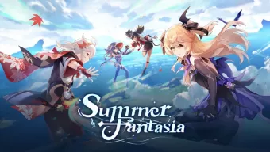
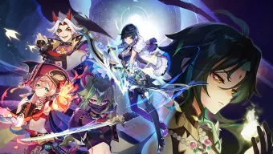
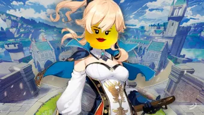
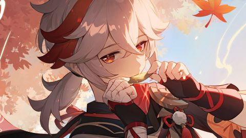
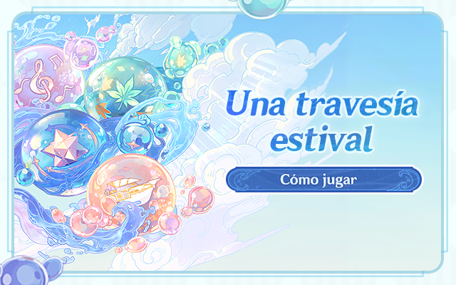

Genshin Impact estrena su versión 2.8 con nuevo personaje, cambios en el mapa y más novedades

Genshin Impact detalla su nueva actualización, con personajes inéditos, misiones y otras novedades

La pasión por Genshin Impact también llega a LEGO: así es el set que propone un aficionado

Códigos de Genshin Impact de julio 2022; consigue protogemas gratis, objetos y más
Twitter marca un inicio de año récord en charlas de videojuegos: estos fueron los más comentados

Cómo jugar «Una travesía estival»